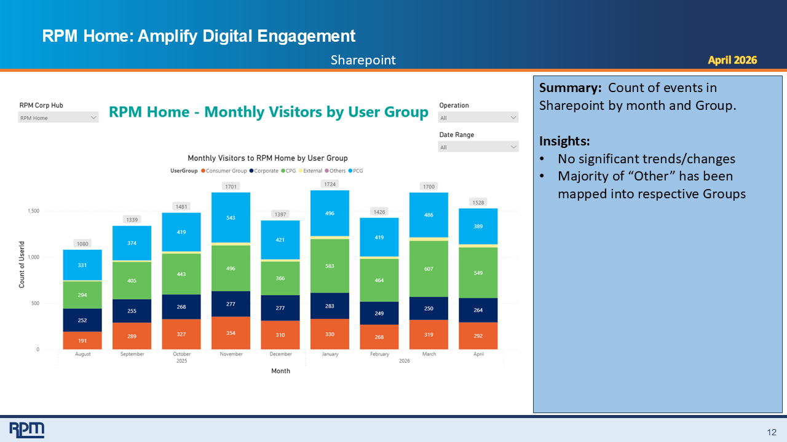
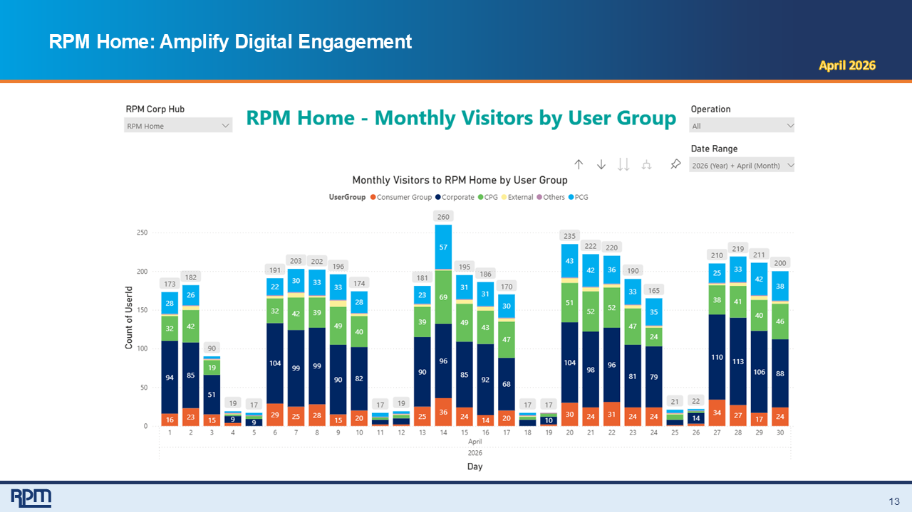

Business Problem
Communications stakeholders needed a clear way to evaluate email campaign effectiveness, department-level engagement, and audience response trends.

Email Performance Overview
Reporting view focused on email delivery, open behavior, click engagement, and monthly communication performance.

Department Engagement Analysis
Department-level view used to compare engagement patterns and evaluate communication effectiveness across audiences.
Solution
Built reporting views that helped stakeholders monitor communication performance across departments, time periods, and campaign categories.
Key Features
- Email open rate analysis
- Email click rate analysis
- Department-level engagement reporting
- Monthly communication performance trends
- Campaign effectiveness monitoring
- Executive-ready KPI summaries
Business Impact
Helped communications teams evaluate content effectiveness, understand audience engagement, and improve future campaign planning.